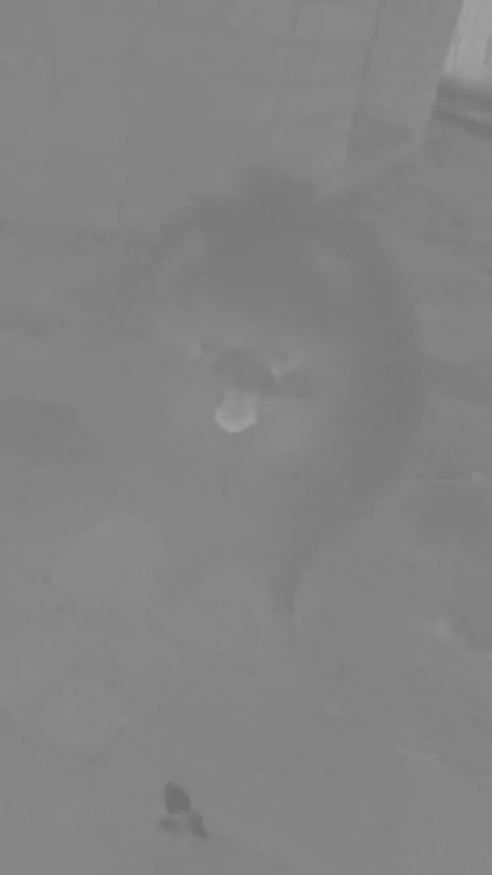

在上一篇文章中，我们介绍了如何将图像、Canvas 和视频加载到纹理中。本文将介绍一种在 WebGPU 中更高效地使用视频的方法。
在上一篇文章中，我们通过调用 copyExternalImageToTexture 将视频数据加载到 WebGPU 纹理中。这个函数会将视频的当前帧从视频本身复制到我们预先创建的纹理中。
WebGPU 还有另一种使用视频的方法。它叫做 importExternalTexture，顾名思义，它会提供一个 GPUExternalTexture。这个外部纹理直接表示视频中的数据，不会进行复制。[1] 你只需要将视频传递给 importExternalTexture，它就会返回一个可直接使用的纹理。
使用 importExternalTexture 获取的纹理有几个重要的限制。
对于大多数 WebGPU 应用来说，这意味着纹理只存在于你的 requestAnimationCallback 函数结束之前。或者无论你在哪个事件中进行渲染——requestVideoFrameCallback、setTimeout、mouseMove 等……当你的函数退出时，纹理就会失效。要再次使用视频，必须再次调用 importExternalTexture。
这意味着你每次调用 importExternalTexture 时都必须创建一个新的绑定组[2]，以便将新的纹理传递给着色器。
texture_external在之前所有的纹理示例中，我们一直使用 texture_2d<f32>，但从 importExternalTexture 获取的纹理只能绑定到使用 texture_external 的绑定点上。
textureSampleBaseClampToEdge在之前所有的纹理示例中，我们一直使用 textureSample，但从 importExternalTexture 获取的纹理只能使用 textureSampleBaseClampToEdge。[3] 顾名思义，textureSampleBaseClampToEdge 只会采样纹理的 base mip level（level 0）。换句话说，外部纹理不能有 mipmap。此外，该函数会钳制到边缘，这意味着将采样器设置为 addressModeU: 'repeat' 将被忽略。
注意，你可以通过使用 fract 来实现自己的重复采样：
let color = textureSampleBaseClampToEdge( someExternalTexture, someSampler, fract(texcoord) );`
如果这些限制不满足你的需求，那么你需要像上一篇文章中介绍的那样使用 copyExternalImageToTexture。
让我们使用 importExternalTexture 来制作一个可用的示例。先看一段视频
以下是相对于上一个示例所需的改动。
首先，我们需要更新着色器。
struct OurVertexShaderOutput {
@builtin(position) position: vec4f,
@location(0) texcoord: vec2f,
};
struct Uniforms {
matrix: mat4x4f,
};
@group(0) @binding(2) var<uniform> uni: Uniforms;
@vertex fn vs(
@builtin(vertex_index) vertexIndex : u32
) -> OurVertexShaderOutput {
let pos = array(
// 1st triangle
vec2f( 0.0, 0.0), // center
vec2f( 1.0, 0.0), // right, center
vec2f( 0.0, 1.0), // center, top
// 2nd triangle
vec2f( 0.0, 1.0), // center, top
vec2f( 1.0, 0.0), // right, center
vec2f( 1.0, 1.0), // right, top
);
var vsOutput: OurVertexShaderOutput;
let xy = pos[vertexIndex];
vsOutput.position = uni.matrix * vec4f(xy, 0.0, 1.0);
- vsOutput.texcoord = xy * vec2f(1, 50);
+ vsOutput.texcoord = xy;
return vsOutput;
}
@group(0) @binding(0) var ourSampler: sampler;
-@group(0) @binding(1) var ourTexture: texture_2d<f32>;
+@group(0) @binding(1) var ourTexture: texture_external;
@fragment fn fs(fsInput: OurVertexShaderOutput) -> @location(0) vec4f {
- return textureSample(ourTexture, ourSampler, fsInput.texcoord);
+ return textureSampleBaseClampToEdge(
+ ourTexture,
+ ourSampler,
+ fsInput.texcoord,
+ );
}
上面我们不再将纹理坐标乘以 50，因为那只是为了展示纹理重复功能，而外部纹理不能重复。
我们还做了上面提到的必需更改。texture_2d<f32> 变成了 texture_external，textureSample 变成了 textureSampleBaseClampToEdge。
我们删除了所有与创建纹理和生成 mip 级别相关的代码。
当然，我们需要指向我们的视频
- video.src = 'resources/videos/Golden_retriever_swimming_the_doggy_paddle-360-no-audio.webm'; + video.src = 'resources/videos/pexels-anna-bondarenko-5534310 (540p).mp4';
由于我们不能有 mip 级别，所以也不需要创建会使用 mip 级别的采样器。
const objectInfos = [];
- for (let i = 0; i < 8; ++i) {
+ for (let i = 0; i < 4; ++i) {
const sampler = device.createSampler({
addressModeU: 'repeat',
addressModeV: 'repeat',
magFilter: (i & 1) ? 'linear' : 'nearest',
minFilter: (i & 2) ? 'linear' : 'nearest',
- mipmapFilter: (i & 4) ? 'linear' : 'nearest',
});
...
由于在调用 importExternalTexture 之前我们无法获得纹理，所以无法提前创建绑定组，因此我们需要保存以后创建它们所需的信息。[4]
const objectInfos = [];
for (let i = 0; i < 4; ++i) {
...
- const bindGroups = textures.map(texture =>
- device.createBindGroup({
- layout: pipeline.getBindGroupLayout(0),
- entries: [
- { binding: 0, resource: sampler },
- { binding: 1, resource: texture },
- { binding: 2, resource: uniformBuffer },
- ],
- }));
// 保存渲染该对象所需的数据
objectInfos.push({
- bindGroups,
+ sampler,
matrix,
uniformValues,
uniformBuffer,
});
在渲染时我们会调用 importExternalTexture 并创建绑定组
function render() {
- copySourceToTexture(device, texture, video);
...
const encoder = device.createCommandEncoder({
label: 'render quad encoder',
});
const pass = encoder.beginRenderPass(renderPassDescriptor);
pass.setPipeline(pipeline);
+ const texture = device.importExternalTexture({source: video});
objectInfos.forEach(({sampler, matrix, uniformBuffer, uniformValues}, i) => {
+ const bindGroup = device.createBindGroup({
+ layout: pipeline.getBindGroupLayout(0),
+ entries: [
+ { binding: 0, resource: sampler },
+ { binding: 1, resource: texture },
+ { binding: 2, resource: uniformBuffer },
+ ],
+ });
...
pass.setBindGroup(0, bindGroup);
pass.draw(6); // 调用顶点着色器 6 次
});
此外，鉴于纹理不能重复，让我们调整矩阵计算，使绘制的四边形更可见，而不是像之前那样被拉伸成 50:1 的比例。
function render() {
...
objectInfos.forEach(({bindGroups, matrix, uniformBuffer, uniformValues}, i) => {
const bindGroup = bindGroups[texNdx];
const xSpacing = 1.2;
- const ySpacing = 0.7;
- const zDepth = 50;
+ const ySpacing = 0.5;
+ const zDepth = 1;
- const x = i % 4 - 1.5;
- const y = i < 4 ? 1 : -1;
+ const x = i % 2 - .5;
+ const y = i < 2 ? 1 : -1;
mat4.translate(viewProjectionMatrix, [x * xSpacing, y * ySpacing, -zDepth * 0.5], matrix);
- mat4.rotateX(matrix, 0.5 * Math.PI, matrix);
- mat4.scale(matrix, [1, zDepth * 2, 1], matrix);
+ mat4.rotateX(matrix, 0.25 * Math.PI * Math.sign(y), matrix);
+ mat4.scale(matrix, [1, -1, 1], matrix);
mat4.translate(matrix, [-0.5, -0.5, 0], matrix);
// 将 uniform 值从 JavaScript 复制到 GPU
device.queue.writeBuffer(uniformBuffer, 0, uniformValues);
pass.setBindGroup(0, bindGroup);
pass.draw(6); // 调用顶点着色器 6 次
});
这样我们就得到了一个零复制的 WebGPU 视频纹理
texture_external？你们中的一些人可能会注意到，这种使用视频的方式使用 texture_external 而不是更常见的 texture_2d<f32>，并且使用 textureSampleBaseClampToEdge 而不是 textureSample。这意味着，如果你想使用这种方式使用纹理，并将其与渲染的其他部分混合，你就需要不同的着色器。使用静态纹理时用 texture_2d<f32>，使用视频时用 texture_external。
我认为理解这里底层发生的事情很重要。
视频通常以视频的亮度部分（每个像素的亮度）与色度部分（每个像素的颜色）分开的方式传输。颜色的分辨率通常低于亮度部分。一种常见的分离和编码方式是 YUV，其中数据被分离为亮度（Y）和（UV）颜色信息。这种表示方式通常也能更好地压缩。
WebGPU 对外部纹理的目标是直接使用视频提供的格式。为了做到这一点，它假装存在一个视频纹理，但在实际实现中可能有多个纹理。例如，一个包含亮度值（Y）的纹理和一个包含 UV 值的独立纹理。而且，这些 UV 值可能以特殊的方式分离。不是像下面这样每像素 2 个值交叉排列的纹理
uvuvuvuvuvuvuvuv uvuvuvuvuvuvuvuv uvuvuvuvuvuvuvuv uvuvuvuvuvuvuvuv uvuvuvuvuvuvuvuv uvuvuvuvuvuvuvuv
它们可能是这样排列的
uuuuuuuu uuuuuuuu uuuuuuuu uuuuuuuu uuuuuuuu uuuuuuuu vvvvvvvv vvvvvvvv vvvvvvvv vvvvvvvv vvvvvvvv vvvvvvvv
在一个纹理区域中每个像素一个（u）值，在另一个区域中每个像素一个（v）值。同样，以这种方式排列数据通常可以更好地压缩。
当你将 texture_external 和 textureSampleBaseClampToEdge 添加到着色器时，WebGPU 在幕后会向你的着色器注入代码，将这些视频数据转换回 RGBA 值。它可能会从多个纹理采样，或者进行纹理坐标计算，以便从 2 个、3 个或更多位置提取正确的数据并转换为 RGB。
上面视频的 Y、U 和 V 通道如下

WebGPU 在这里实际上是在提供一种优化。在传统图形库中，这需要你自己来完成。你要么自己编写从 YUV 到 RGB 的转换代码，要么请求操作系统来完成。你会将数据复制到 RGBA 纹理中，然后将该 RGBA 纹理用作 texture_2d<f32>。这种方式更灵活——你不需要为视频和静态纹理编写不同的着色器。但是，它更慢，因为转换必须从 YUV 纹理发生，再到 RGBA 纹理。
这种更慢但更灵活的方法在 WebGPU 中仍然可用，我们已经在上一篇文章中介绍过。如果你需要灵活性——如果你想在任何地方使用视频而不需要为视频和静态图像使用不同的着色器——那么请使用那种方法。
WebGPU 为 texture_external 提供这种优化的原因之一是因为这是 Web。浏览器支持的视频格式会随着时间变化。WebGPU 会为你处理这些，而如果你必须自己编写从 YUV 到 RGB 的着色器，你还必须知道视频格式不会改变——但这是 Web 无法保证的事情。
使用本文描述的 texture_external 方法最明显的场景是视频相关功能，比如会议、Zoom、FB Messenger 相关功能，比如在进行面部识别以添加可视化效果或背景分离时。另一个可能的应用是 WebXR 支持 WebGPU 后的 VR 视频。
实际上，让我们使用摄像头。这只需要很小的改动。
首先，我们不指定要播放的视频。
const video = document.createElement('video');
- video.muted = true;
- video.loop = true;
- video.preload = 'auto';
- video.src = 'resources/videos/pexels-anna-bondarenko-5534310 (540p).mp4'; /* webgpufundamentals: url */
await waitForClick();
await startPlayingAndWaitForVideo(video);
然后，当用户点击播放时，我们调用 getUserMedia 请求摄像头。将生成的流应用到视频。
function waitForClick() {
return new Promise(resolve => {
window.addEventListener(
'click',
- () => {
+ async() => {
document.querySelector('#start').style.display = 'none';
- resolve();
+ try {
+ const stream = await navigator.mediaDevices.getUserMedia({
+ video: true,
+ });
+ video.srcObject = stream;
+ resolve();
+ } catch (e) {
+ fail(`could not access camera: ${e.message ?? ''}`);
+ }
},
{ once: true });
});
}
根据你的用例，你可能需要镜像图像，使其看起来像镜子中的效果。
mat4.translate(viewProjectionMatrix, [x * xSpacing, y * ySpacing, -zDepth * 0.5], matrix);
mat4.rotateX(matrix, 0.25 * Math.PI * Math.sign(y), matrix);
- mat4.scale(matrix, [1, -1, 1], matrix);
+ mat4.scale(matrix, [-1, -1, 1], matrix);
mat4.translate(matrix, [-0.5, -0.5, 0], matrix);
不需要其他更改。
如果需要更灵活的 texture<f32> 类型纹理而不是更高效的 texture_external 类型纹理，我们可以对上一篇文章中的视频示例进行类似的修改，以获取摄像头图像。
实际发生什么取决于浏览器的实现。WebGPU 规范的制定初衷是希望浏览器不需要进行复制。 ↩︎
规范实际上说实现可以返回相同的纹理，但不是必须的。如果你想检查是否获得了相同的纹理，可以将新纹理与之前的纹理进行比较，代码如下：
const newTexture = device.importExternalTexture(…);如果是相同的纹理，则可以复用现有的绑定组和
const same = oldTexture === newTexture;
oldTexture。 ↩︎
你也可以使用 textureLoad 来处理外部纹理。 ↩︎
我们可以将绑定组拆分为两个——一个持有采样器和 uniformBuffer，可以提前创建；另一个只引用外部纹理，在渲染时创建。这是否值得这样做取决于你的具体需求。 ↩︎